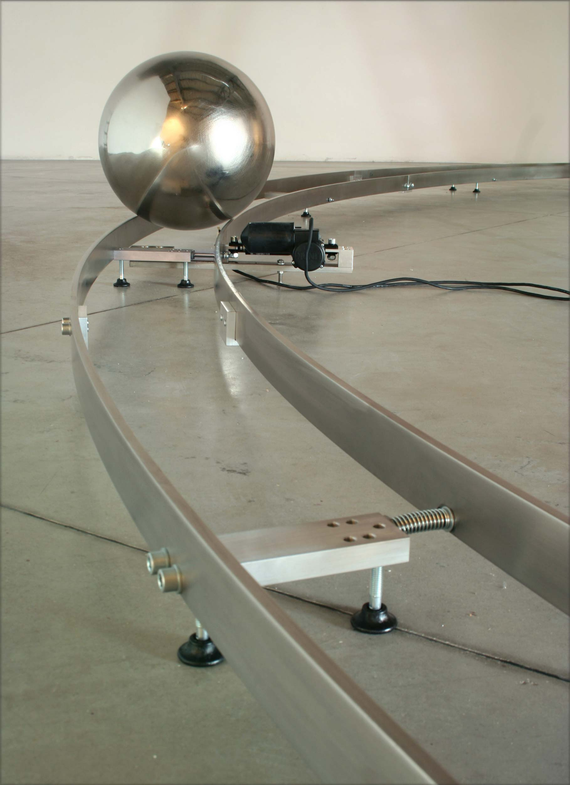

Galleria Nicola Fornello, Prato
2005
Curated by Daniela Cascella
"Orbita"-installation consists of a stainless steel ball 40 cm of diameter slowly moving around circular
stainless steel tracks 8 m of diameter. In the centre point of the tracks there is a single light bulb, the
only light in the space, which casts a shadow of the moving ball to the surrounding walls. The sound of the
rolling ball is picked up with contact microphones attached to the tracks. Then it is amplified and played
back real time through speakers in the corners of the exhibition space.
The constant movement of the ball is possible because of gravitational pull and minimal friction. There are
three servo motors along the tracks on equal distance of each other pulling the tracks closer together just
when the ball is passing by. This lifts the ball a little and it starts to run "downhill" where the tracks are
wider from each other, gathering more speed. This extra speed is enough to keep the ball rolling until the
next servo motor.
